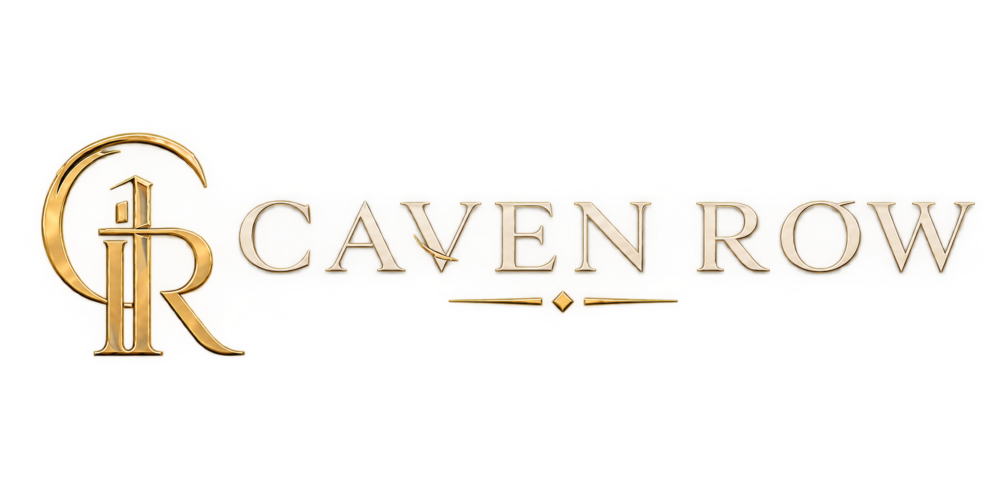
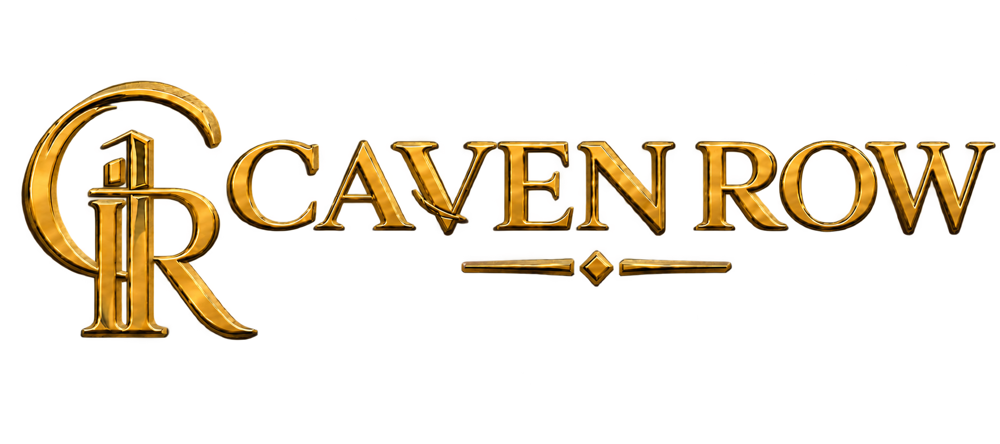

Un indirizzo. Non un catalogo.
Proprietà, automobili ed esperienze rare, riunite in un unico accesso privato.
SCORRI
Ville, castelli e dimore che non compaiono in nessun listino pubblico.
Planimetrie, archivio storico e sopralluoghi riservati — non semplici fotografie da annuncio.
Entra nel mondo ImmobiliSupercar e hypercar selezionate, vissute prima di essere possedute.
Test drive privati e itinerari su strada, accesso a collezioni che raramente lasciano il garage.
Entra nel mondo SupercarSoggiorni e itinerari costruiti attorno a un solo ospite alla volta.
Concierge dedicato, accessi esclusivi, pacchetti che uniscono luogo, automobile e tempo.
Entra nel mondo EsperienzeNote dall'archivio.
Tutto il JournalDentro Villa Serrasanta: un restauro durato sette anni
Heritage — 6 minLa geometria silenziosa delle hypercar da collezione
Automotive — 4 minCome nasce un itinerario Caven Row
Esperienze — 3 minIl Founder Program: cosa significa davvero accesso privato
Membership — 5 minL'accesso non si acquista. Si riceve un invito.
Il Founder Program di Caven Row è aperto a un numero limitato di membri fondatori.
Richiedi una valutazione riservata